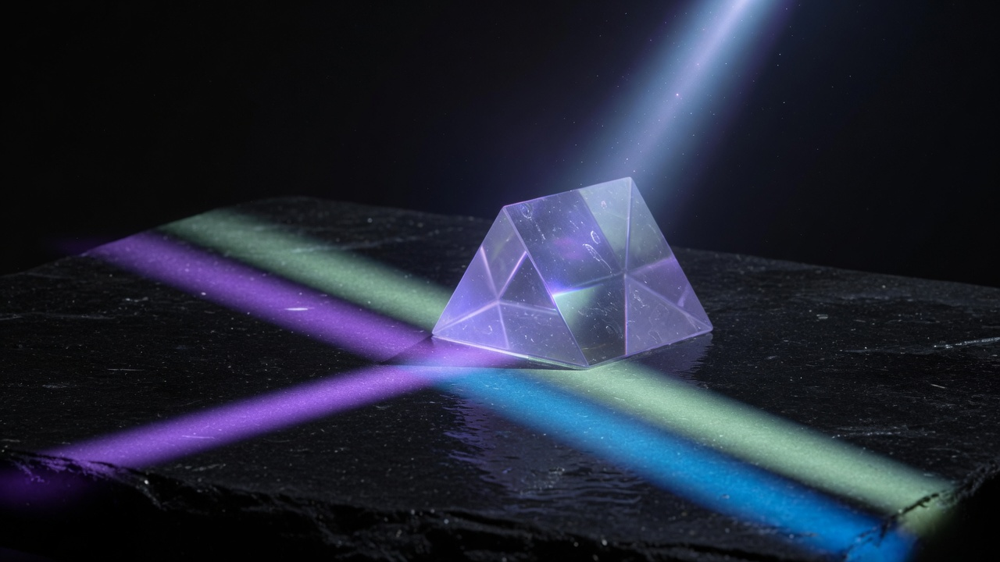

Not a manifesto. A public book, a simulator, and a weekly lock.
I am building in public so the Earth–Moon stack is something you can
actually see — cadence, customers, bottlenecks — not a vibe.
Educational only. Not financial advice. Build with me. Ad Astra.
Who
Mel. Operator, not tourist.
I live at the intersection of space hardware, markets, and first-principles tools.
The lunar economy is not “someday.” It is launch cadence, funded customers,
spectrum, landers, and people who will sit the night shift on a dusty floor.
My job on the internet is simple: translate that stack so a
regular person with a few thousand dollars of curiosity can follow along —
and so operators, educators, and founders have something sharper than a pitch deck.
Public handle @link_mindset
Product LUNARA — cislunar portfolio sim
Ritual Monday lock · Friday P&L
Toolkit AETHER — first-principles with Grok
Work
Two artifacts. One spine.
If you only remember one sentence: I build public instruments for a multiplanetary economy.
LUNARA
Cislunar economy simulator
A free educational app that lets you simulate a realistic $2,500 book
in the Earth–Moon stack — space names, a public Alpha Base Book,
catalyst scores, and a 3D Moon you can actually look at.
Live marks · Monday lock · clone the operator book
Code lives in lunara-port-sim. Deploy when you are ready to take feedback in public.

AETHER
First-principles toolkit
Six ruthless modes for Grok: deconstruct, audit, synthesize, generate
hypotheses, map civilizational consequence. Built so curiosity can
do PhD-shaped work without the costume.